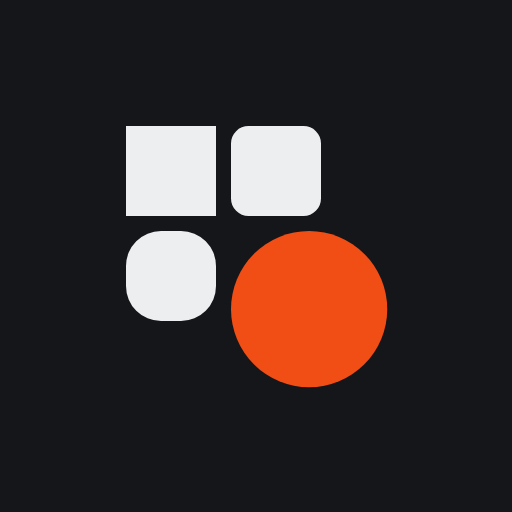
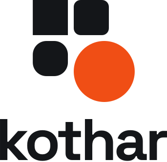
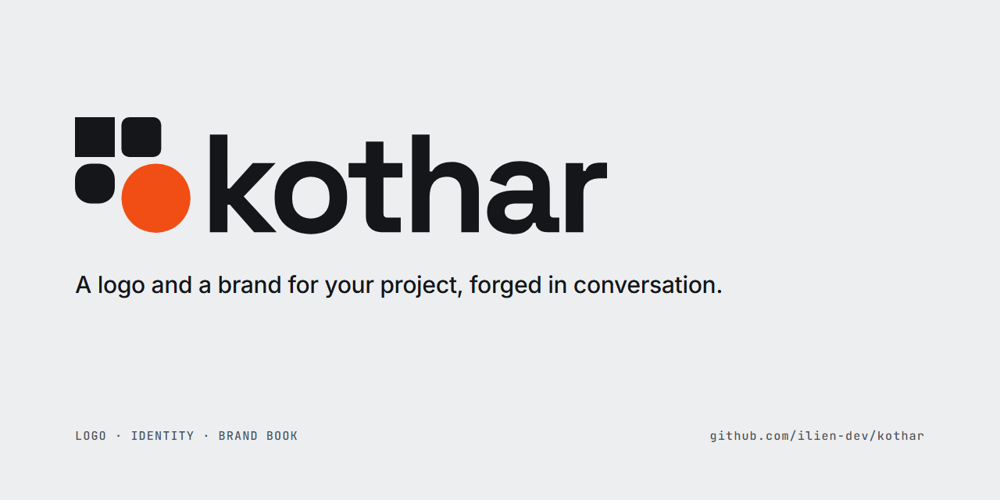
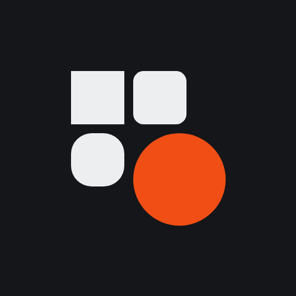

A logo and a brand for your project, forged in conversation.
Tagline: a proposal
A skill that forges a product's brand, through questions.
Kothar runs inside an AI agent. It asks, draws logo options from your references and delivers the identity and a brand book. For developers and makers who ship without a designer.
Precise · Crafted · Contemporary · Instrument-like · Warm accent
Pen nibs, bezier handles, brushes, swatch fans, the AI sparkle; anvils and flames.
A raw block, refined in passes until it is round.
Read it like a page: a sharp square, a square with soft corners, one softer still, and the finished disc. It is how kothar works: options in front of you, each drawing refined before you see it, and one piece you choose. The orange disc is that piece.
— Construction: 256 grid, 24 margin, tiles of 72 with a 12 gap; corner radii 0, 14, 28; disc r 62.5 filling the last cell.
— Second reading: the control tiles of the references, one lit.
— One ink: the disc reads as the odd one out by its shape alone.
Below 32 px the gaps open from 12 to 28 so the four parts never merge. The main symbol is used from 32 px.

The disc, surfaces
Small text and lines
The tiles, the name, text
Light grounds
Secondary surfaces
Contrast: ink on paper 15.6:1 · ink on orange 5.0:1 · orange on ink 5.0:1 · orange on paper 3.1:1 (marks and large type only) · burnt orange on paper 4.9:1 · orange on aluminium 2.3:1, never.
The name and headings · tracking −0.045em
Interfaces and documents
Terminal, labels, captions



├─ logo/ symbol, small cut, horizontal, stacked, wordmark · colour, on dark, black, white · png/
├─ web/ favicon.svg · favicon.ico · app icons · og-image · manifest · head snippet
├─ social/ github-social-preview · github-avatar
├─ motion/ kothar-animated.svg
├─ tokens.json · README.md
└─ brand-book.html · this document
1 · A trademark search: grid-of-tiles marks are common.
2 · Upload the social preview in the repository settings.
3 · Use the identity in the README images and the docs.